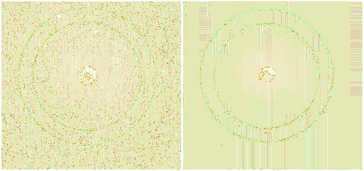
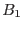
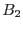

The first method of scaling the calibrated scattered light feature is based upon the assumption that the number of counts corresponding to this feature scales linearly with the background level of the OM image.
|  |
The background is calculated for the same ring-shaped region of
both the input () and calibration () images (Fig.3).
The scaling factor applied to the calibrated image in this case
will be
Systematic error is reduced in the background calculation by masking sources in the data image. These are identified by an "Emboss-filtering" technique which compares modified versions of the image, shifted by a few pixels in the horizontal and vertical directions.
A histogram of the remaining pixels is computed. The background value is measured from only the most-populated 10% of pixel values. This reduces bias in the measurement from residual structure such as irregular scattered light.
Thus, is then obtained as the weighted average
of the values of these most populated pixels: